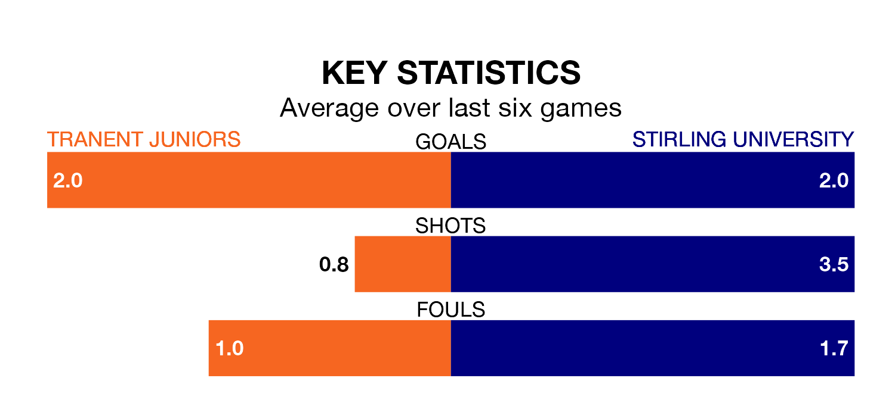

Struggling Stirling University face Tranent Juniors away at Foresters Park on Saturday looking to build on a win in their last league outing.
After securing all three points with a 1-0 victory over East Stirlingshire on December 9, Stirling University sit 16th in Highland and Lowland Football Leagues.
They travel to play a Tranent Juniors side sixth in the standings, who also won their last match, 2-0 against Bo'ness United.
With 37 goals in 15 games so far this season, Tranent Juniors are scoring more than average in the league with 2.5 goals per game. And they are conceding fewer than average, letting in 15 goals at a rate of 1.0 per game.
Stirling University, meanwhile, are below average scorers, with 1.3 goals per game, compared to a league average of 1.7. They have conceded 1.2 goals per game.
The Belters are in good form in Highland and Lowland Football Leagues, with four wins and two draws from their last six games.
But with five wins and one loss over that period, the visitors' form is even better – they have taken 15 points from 18, compared to the home side's 14.
